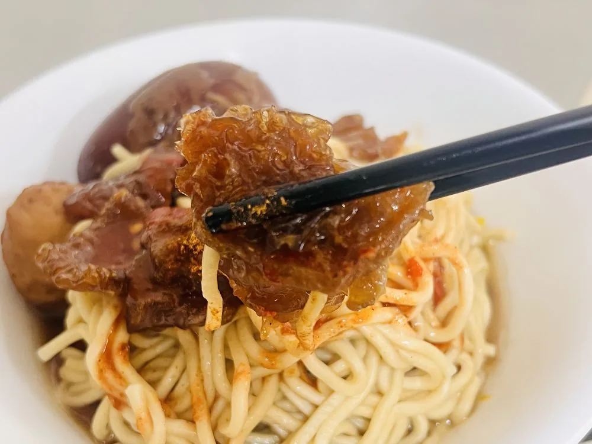

01
招牌
椪皮麵
油麵拌上滷汁，搭配慢滷椪皮；實際餐點還可見滷蛋與滷丸，是店裡最有代表性的古早味組合。
把炸過的豬皮慢慢燉滷，吸飽滷汁後變得柔軟又帶彈性，再配上一碗熱麵。這就是嘉義人熟悉的「椪皮麵」。
PONG-PI NOODLES
椪皮是嘉義傳統小吃裡很有辨識度的一味。豬皮經過處理與油炸，再放進滷汁中慢慢燉煮，吸收香氣後呈現柔軟、Q彈的口感。配上麵條、滷汁與熟悉的古早味配料，就是一碗很有嘉義個性的椪皮麵。
民雄一帶流傳已久的傳統吃法，嘉義分店在興業東路延續這份在地風味。
WHY LOCALS COME BACK
「椪皮」本身就是很有地方辨識度的關鍵字，對第一次來嘉義的旅客，也是一道值得認識的傳統小吃。
沒有複雜包裝，讓麵、湯、小菜與熟悉的滷香成為主角。
位於嘉義市東區，從吳鳳南路一帶前往方便，Google 地圖可直接導航到店門口。
VISIT US
營業時間可能因節日或臨時狀況調整，出發前建議以 Google 地圖最新資訊為準。
FAQ
椪皮指的是經過處理、油炸再燉滷的豬皮，吸收滷汁後口感柔軟又有彈性。搭配麵條，是嘉義很有地方特色的傳統吃法。
地址是嘉義市東區興業東路30號，靠近吳鳳南路一帶。點網站上的「Google 地圖導航」即可直接開啟路線。
目前 Google 商家資訊顯示週三至週日 11:00–20:00，週一、週二公休。遇到節日或臨時調整時，仍以店家最新公告為準。
公開食記與顧客評論常提到骨仔肉、粉腸湯等品項。完整菜單與當日供應內容以現場為準。